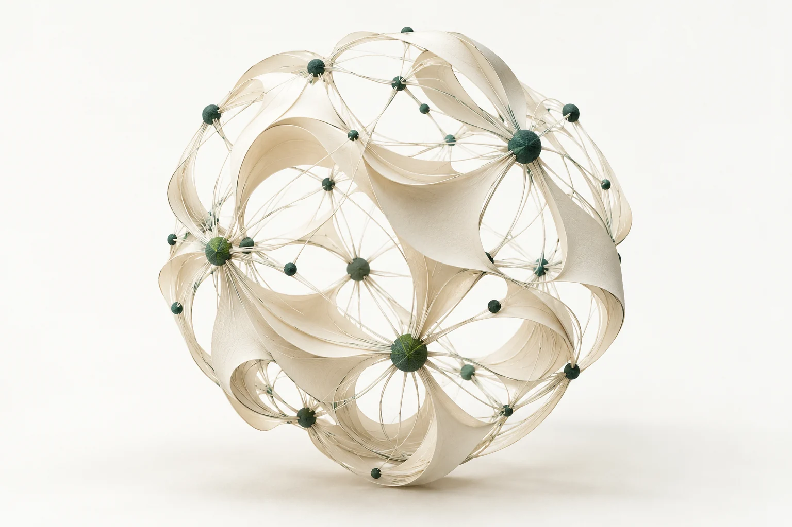

学习地图沿着问题，找到下一步。
把大模型学习拆成几个方向。点开一个方向，看看值得追问的问题。
地图展示学习方向；个人进度与学习记录，待逐步补充。
学习手记
把一个问题写清楚，是理解它的开始。
起步内容：以下为示例手记，用于预览阅读体验。
暂时没有找到这篇手记
换一个关键词，或看看全部内容。
让理解，落到实践里。
每一次动手，都从一个具体的问题开始。
可以从这里开始
做一个能引用来源的问答助手
从少量文档开始，走通分块、检索与回答的完整流程。
观察：回答能否追溯到原文？没有依据时会怎样？
RAG应用探索亲手实现一个小型注意力层
用小矩阵实现 Q、K、V 的计算，对照张量维度和因果掩码。
观察：改变一个输入，哪些位置的输出会跟着改变？
Attention模型原理以上是实践选题，尚未标为已完成项目。
Liang Jo-shui
你好，我是梁若水。
华南理工大学软件工程专业，本科在读。这里记录我在大模型方向的学习，也收集一路上的笔记、实践与思考。
有些理解会变，有些问题还没有答案。先记录，再回头看。
English introduction
I'm Liang Jo-shui (梁若水), an undergraduate student in Software Engineering at South China University of Technology. This is my personal space for learning about large language models, taking notes, and reflecting on practice.